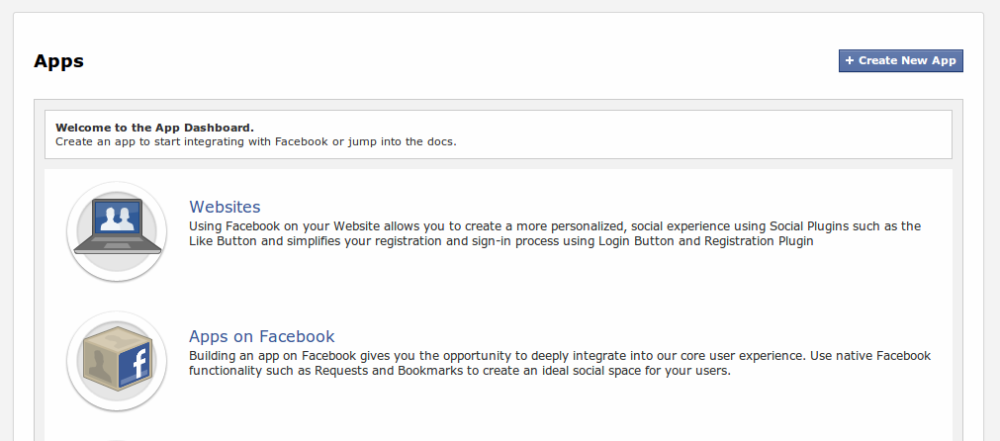

As all developers know, your creations can become tired, bored, and sometimes angry when forced to talk to only a single server or service. Applications are, for all intents and purposes, tiny monsters: they grow hungry to communicate with others to expand their knowledge, reach, and power. We at DreamFactory know this all too well and wanted to create an easy way to allow your monsters to feed their yearning. With the next release of the DreamFactory Services Platform™ (version 1.1.3), satisfying that lust will become a whole lot easier. What makes this possible you ask? A new system service called Portal does.
Fortunately, you won't need to hold hands with your team and/or conduct a séance to open a portal. However, some simple configuration steps are required. In this post, we'll be creating a portal to Facebook and accessing the Graph API through your DSP. So read on, if you dare... Muahhahaha!
All good tales have a prologue, and this one is no different. Most remote services and APIs use OAuth to authenticate and authorize users and usage of their service. We wanted to create a seamless way for your DSP to authenticate and authorize with remote OAuth services, without forcing developers to jump through a deadly row of firey rings.
If you're not familiar with the dance that is OAuth, please take a moment to read up on it. You don't need to fully understand the workings, but the concepts are important. Here are few good sites to check:
OAuth can be used to authenticate a user and authorize various operations. The authentication part is straightforward. Your application requests access to data on a users' behalf. The user will either allow or deny this access. Easy peasy. Authorization, on the other hand, can be more complex as each service defines their own set of authorization rules, or scopes. We'll touch on that a bit later.
The important take-away here is the basic concept of a client ID and client secret. It is with these keys that the power of the portal can be unlocked.
Please note: OAuth comes in two distinct flavors: version 1 and version 2. The portal service only supports version 2 at this time. Version 1 has been deprecated for over a year. However, some services, like Twitter, still use version 1.
The new DSP portal service allows you to authenticate and communicate with these remote APIs with the same REST calls you've been making to use other DSP services. Before this is possible, however, we need to prepare your laboratory with the necessary ingredients to open the portal.
There are three key ingredients needed to open a portal on your DSP. The first is a running DSP upon which to tinker. The second, a set of keys (client ID and secret) from the remote service. And lastly, the third is telling your DSP about the remote service. In this tutorial, we will be opening a portal to Facebook on your DSP.
Before you can proceed in procuring your ingredients from Facebook, you'll need to be registered as a developer. Go to the Facebook Developers web site and register as a developer if you have not already. You will have to have a Facebook account to do this.
Getting a set of keys from Facebook is a simple process: create an app. For each application you create on the Facebook Developer console you will receive a set of keys. You could, should you choose to do so, create multiple applications on Facebook and link them to different portals on your DSP. But that is beyond the scope of this article. 